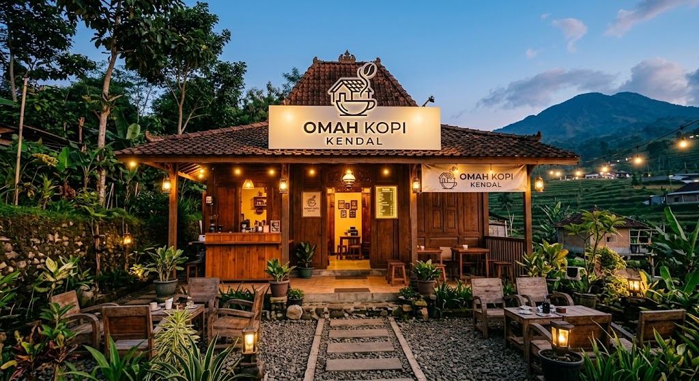

Kopi Robusta Kendal
Rp22.000
UMKM Kendal
Kopi lokal pilihan untuk teman pendamping belajar, bekerja, dan berdiskusi.

Omah Kopi Kendal menghadirkan pilihan kopi dengan cita rasa khas yang cocok dinikmati dalam berbagai suasana. Kami menyediakan menu kopi seperti Kopi Robusta Kendal, Kopi Tubruk Signature, Cold Brew Aren, dan menu baru Kopi Arabica Kendal, dengan pilihan rasa yang berbeda. Dengan konsep sederhana dan nyaman, Omah Kopi Kendal menjadi tempat untuk menikmati kopi sambil bersantai, belajar, bekerja, atau mengobrol bersama teman.
Rp22.000
Rp18.000
Rp22.000
Rp20.000
Senin - Jum'at: 08.00 - 21.00 WIB
Sabtu dan Minggu: 09.00 - 23.00 WIB
Kendal, Jawa Tengah
Tempat nyaman untuk menikmati kopi lokal.
Jam layanan: Senin - jum'at, 08.00 - 21.00 WIB.
Sabtu dan Minggu, 09.00 - 23.00 WIB.